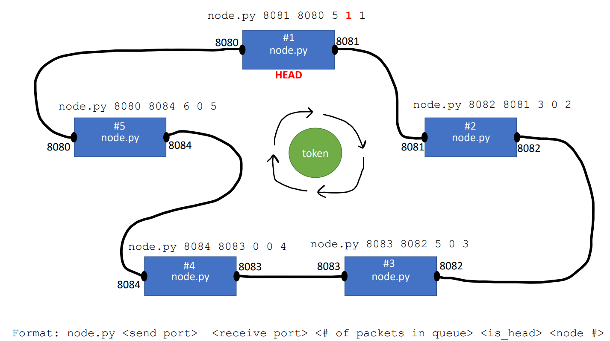

Programming Assignment 3: Link Layer Token Passing Protocol
Assigned Friday October 18th
Due Sunday November 3rd @11:59 PM
GitHub Repo
You will use the same GitHub repo from PA1, PA2. All of your files for this assignment should go inside a /PA3 folder
Overview
At a LAN-level, if two devices transmit messages to each other at the same time, collisions can occur. To prevent this from happening, we discussed several media access control (MAC) protocols. One type of MAC protocol is "taking turns", where each endpoint gets to take turns transmitting messages.
In this assignment, you will implement the
token passing protocol.
In this protocol, hosts are set up a ring-like topology, and a special packet (a "token"), is transmitted amongst the ring. The token can only be at one host, and hosts can only transmit messages when they have the token. Your program will use several instances of the same python program (node.py) that are connected via sockets to simulate a LAN that is using the token passing protocol. The token will always begin at the
head node.
Each host will have:
- A sender port, which is the port that the host sends the token over
- A receiving port, which is the port that they receive the token on
- The number of packets that the host needs to send out. This number will be >= 0
- A flag (true or false), to indicate if the node is the head node.
- A node number (Node #1, Node #2, etc).

When a node/host receives the tocken on its receving port, it will check its buffer/queue, and if it has packets to send out, it will send out on packet. Sending a packet simply means printing out a message to the screen, and removing a value from the buffer.
When a packet gets sent, there is a 25% chance that a new packet gets added to the host's buffer. If the host does not have any packets in its buffer to send out, it will simply pass the token to the next host, and then do some RNG to see if a new packet will get added to the buffer.
Your program should run indefintely. You do not need to implement a graceful termination for this protocol.
Socket instructions
For all previous assignments, we have used TCP sockets, but for this assignment you should use
UDP sockets . It will make setting up and transmitting messages in a ring topology much much easier. This means the code for using sockets will be slightly different. Examples for UDP sockets
can be found here.
Programs
You will develop one file, node.py. This program will handle setting up the sockets, receivng the token, sending the token, and managing the host's buffer.
Below is some very basic pseudo code you can use to guide yourself when implementing your solution:
You will likely need an if block that handles the first very sending of the token in the head node.
You will run these programs via the command line, and pass in the host information as command line arguments. The format will be
python node.py (send_port) (receive_port) (#_of_packets_in_buffer) (is_head) (node_#)
For example
node.py 8081 8080 5 1 1 would mean that this host is sending the token on port 8081, receiving the token on port 8080, has 5 packets currently in buffer, is the head node, and is node # 1.
Be sure that you are paying attention to the port numbers and make sure the ports are set up in a ring-like topology (see diagram above).
Programming Language
You are allowed to use a programming language of your choice. Although, you must use a language that supports:
- Socket communication
- OOP or Structs
- Invocation from the command line/terminal
Python is the support language for this class, so Reese will not be able to help with technical issues or syntax issues if you select a language other than Python. Java, Rust, Go, C/C++ are all valid languages to use.
Input Files
Sample output
Click here to see an a sample demo of the program. It's much easier to understand by watching a video instead of looking at a picture. There is no required output to match exactly, but it should be somewhat similar to what you see in the video.
Your video demo should include five hosts/teminals.
Assumptions
- There will only be one head node
Hints
- First get it working with two hosts, then three hosts, and then five hosts
- This is possible with TCP sockets, but requires much more work
- Dont submit code that errors out. If you can't get buffer management working, try to get everything else working.
- Keep it simple. This assignment does not require a lot of code
Video Demo
You will record a video demo that highlights the functionality of your program. You can do this with Panopto, or you can record with another recording software (such as OBS) and post it to youtube as private or unlisted.
Your video demo must also provide us a brief walkthrough of your code. This means your video demo will require commentary. Especially if you are using a language other than Python/Java, it will help us see that you followed the instructions.
Partners
You are allowed to work with up to two partners. All members need to have their own repository (yes they will all have the same code).
Submission Info
BOTH MEMBERS MUST SUBMIT A REPO LINK TO D2L. All files should be pushed to your repository. You still need a README that contains the video link and information about your program.
Grading Rubric (100 Points)
| Requirement |
Points |
| Each host/node has a (1) sending port, (2) receiving port, (3) node #, (4) current amount of packets in buffer, and (5) if node is the head |
15 |
| Nodes/hosts send around token is a circular direction |
20 |
| Node only transmit messages when they have the token |
15 |
| Buffer size decreases by one after transmitting a message, and has a 25% chance to add a new packet to the buffer after transmitting message or token |
20 |
| Token is sent via sockets |
10 |
| The token starts at the head |
5 |
| The token can only be at one host at any given time |
5 |
| Your solution exists in your GitHub repo that has a README.md describing how to run your program. |
10 |
Penalties
- Running code results in errors before runtime: -30 points
- Running code results in errors during runtime: -15 points
- No video demo: -50 points
- Your repository is public: -100 points
Helpful Examples
Solution
Solution